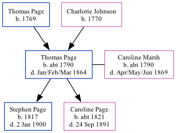

Thomas Page c1790 - 1864
[ Home ] | [ Calendar ] | [ Surnames Index ] | [ Family History ]A laborer and the child of Thomas Page and Charlotte Johnson, Thomas Page, the 3 times great-grandfather of <a href="I1.html">Nigel Horne</a>, was born in Newington, Kent, England <i>c.</i> 1790<span class="citation">1,2,3,4</span>, was baptized in Newington, Hythe, Kent, England on Jan 30, 1791 and married Caroline Marsh (with whom he had 2 children: <a href="I1970.html">Stephen</a> and <a href="I161.html">Caroline Bromley</a>) in Folkestone, Kent, England on Jul 13, 1811<span class="citation">5</span>.</p><p>Throughout his life, he lived in Folkestone in 1841<span class="citation">1</span>; and in Elham, Kent in 1851<span class="citation">2</span> and in 1861<span class="citation">3</span> which is where he died in Jan/feb/mar 1864<span class="citation">4</span> (not the Thomas Page who died 12/12/1868 - that one was a master mariner).
Parents
- Thomas was born in 1769
- Charlotte was born in 1770
Children
- Stephen was born in 1817
- Caroline Bromley was born c. 1821
Citations
- 1841 England Census Online publication - Provo, UT, USA: The Generations Network, Inc., 2006.Original data - Census Returns of England and Wales, 1841. Kew, Surrey, England: The National Archives of the UK (TNA): Public Record Office (PRO), 1841. Data imaged from the National
- 1851 England Census Online publication - Provo, UT, USA: The Generations Network, Inc., 2005.Original data - Census Returns of England and Wales, 1851. Kew, Surrey, England: The National Archives of the UK (TNA): Public Record Office (PRO), 1851. Data imaged from the National
- 1861 England Census Online publication - Provo, UT, USA: The Generations Network, Inc., 2005.Original data - Census Returns of England and Wales, 1861. Kew, Surrey, England: The National Archives of the UK (TNA): Public Record Office (PRO), 1861. Data imaged from the National
- England & Wales, FreeBMD Death Index: 1837-1915 Online publication - Provo, UT, USA: The Generations Network, Inc., 2006.Original data - General Register Office. England and Wales Civil Registration Indexes. London, England: General Register Office. © Crown copyright. Published by permission of the Cont
- Familysearch.org (<a href="http://www.familysearch.org/Eng/search/IGI/individual_record.asp?recid=100010036903&lds=1®ion=2&frompage=99">www.familysearch.org</a>)
Family Tree
Generated by Ged2Site. Last updated on Jul 20, 2025